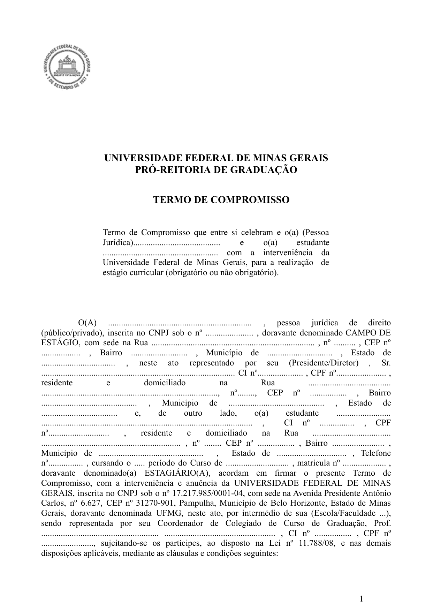

Estágio & Trabalho de Conclusão de Curso (TCC)
Regulamento oficial, procedimentos de matrícula, modalidades de TCC e aproveitamento profissional
Regulamento Oficial • Capítulos VI e VII 300h Estágio • 180h TCC
ESTÁGIO SUPERVISIONADO E TCC
O Estágio Curricular e o Trabalho de Conclusão de Curso constituem os momentos culminantes da formação em Gestão Pública na UFMG. Eles integram teoria analítica, vivência prática no setor governamental e produção de conhecimento científico aplicado.
Visão Geral dos Requisitos Finais
DCP 135 • 7º Período (12 créditos)
DCP 136 • 8º Período (8 créditos)
DCP 089 • 9º Período (4 créditos)
DCP 137 • 10º Período (8 créditos)
📜 Todas as disposições constam nos Capítulos VI e VII do Regulamento (Art. 18 a 41). 📥 Baixar Regulamento do Curso (PDF • 2 MB)
Estágio Curricular Supervisionado (Art. 29 a 41)
O estágio destina-se a propiciar ao estudante o aprendizado prático de aspectos que contribuam para a atuação profissional nos diversos órgãos da administração direta, autarquias, fundações, agências reguladoras e terceiro setor.
Componente Obrigatório
Estágio Obrigatório (300 Horas)
- Dividido em duas etapas curriculares sequenciais:
- DCP 135 - Estágio Curricular A (7º período): 180 horas (12 créditos).
- DCP 136 - Estágio Curricular B (8º período): 120 horas (8 créditos).
- Legislação Aplicável: Respeita os limites da Lei Federal nº 11.788/2008 (máximo de 6 horas diárias e 30 horas semanais).
- Formalização: Exige Termo de Compromisso de Estágio (TCE) assinado pela concedente, UFMG e estudante, sob supervisão de um docente do Departamento de Ciência Política.
Enriquecimento Curricular
Estágio Não-Obrigatório
- Atividade extracurricular remunerada com concessão de bolsa e auxílio-transporte.
- Pode ser iniciado a partir dos primeiros semestres letivos para ganho de experiência.
- As horas de estágio não-obrigatório na área pública podem ser aproveitadas como Atividades Acadêmicas Complementares (AAC - Vivência Profissional) até o limite de 60 horas (4 créditos).
Art. 41: Simulador de Integralização por Experiência Profissional
POSSO PEDIR DISPENSA/INTEGRALIZAÇÃO DO ESTÁGIO A E B?
Conforme o Art. 41 do Regulamento, servidores concursados, comissionados ou contratados em órgãos da administração direta ou indireta podem integralizar os créditos de estágio com sua atuação profissional.
- Matrícula Obrigatória: Inscreva-se normalmente no SIGA (via MinhaUFMG) em
DCP 135(7ºP) ouDCP 136(8ºP). - No Início do Semestre: Preencha o Requerimento de Experiência Profissional (PDF) (DOCX) acompanhado de declaração funcional da chefia com descrição detalhada das atividades.
- No Fim do Semestre: Apresente o Relatório de Atividades (PDF) (DOCX) no Moodle demonstrando o cumprimento da carga horária e a pertinência com a gestão pública.
O Art. 41 abrange vínculos profissionais em instituições governamentais ou organizações que atuem diretamente na gestão de políticas públicas, desde que as funções desempenhadas sejam compatíveis com o perfil do curso.
Como proceder: Matricule-se na disciplina de estágio e apresente no início do semestre a declaração formal do dirigente da entidade detalhando os projetos públicos em que você atua, para validação do docente orientador do DCP.
Se você já realiza estágio remunerado (não-obrigatório) em órgão público ou entidade conveniada:
- Para valer como Estágio Obrigatório (DCP 135 / 136): Ao chegar no 7º ou 8º período, formalize junto ao setor de estágios da FAFICH (CEAG) e ao orientador do DCP o Termo de Compromisso / Aditivo vinculando a atividade à disciplina.
- Nos períodos anteriores (1º ao 6ºP): Você pode aproveitar até 60 horas (4 créditos) como AAC — Modalidade IX (Vivência Profissional Complementar)!
Atividades sem relação com gestão pública ou políticas públicas não dispensam o estágio pelo Art. 41. Contudo, o Regulamento oferece alternativas para quem trabalha durante o dia:
- Estágio nas Férias Escolares (Art. 31): É permitido cumprir a carga horária durante o recesso escolar (respeitando o teto legal de 6h/dia e 30h/semana).
- Projetos Conveniados e Terceiro Setor: Consulte o orientador de estágio do DCP sobre modalidades e parcerias institucionais com flexibilidade de horário.
Tutorial Visual: Termo de Compromisso de Estágio (TCE)
Preenchimento do Termo de Compromisso com Interveniência da UFMG
O Termo de Compromisso com interveniência da UFMG é o documento jurídico obrigatório pela Lei nº 11.788/2008 para formalizar o Estágio Obrigatório (DCP 135/136) ou Não-Obrigatório. Confira os campos indispensáveis na primeira folha:

1. Dados da Instituição Concedente
Preencha a Razão Social completa, CNPJ, endereço oficial da entidade concedente (órgão público, fundação, ONG ou empresa) e os dados do representante legal signatário (cargo, RG e CPF).
2. Identificação Acadêmica do Discente
Insira seus dados pessoais, CPF, RG, endereço e registre expressamente o curso como Bacharelado em Gestão Pública, seu período letivo e número de registro de matrícula no SIGA.
3. Interveniência Institucional UFMG
Identifique a Faculdade de Filosofia e Ciências Humanas (FAFICH) e o Colegiado de Gestão Pública. A assinatura é firmada pela Coordenação do Colegiado com a anuência do docente orientador do Departamento de Ciência Política (DCP).
Limites da Lei nº 11.788/2008
A jornada de estágio não pode ultrapassar 6 horas diárias e 30 horas semanais, garantindo compatibilidade com o turno noturno (19h às 22h30). O seguro contra acidentes pessoais é obrigatório e deve constar na apólice informada no contrato.
Trabalho de Conclusão de Curso - TCC (Art. 19 a 28)
O TCC é componente curricular obrigatório desenvolvido individualmente pelo aluno na área de Gestão Pública a partir do 9º período.
9º Período • 60h
DCP 089: Projeto do TCC
- Objetivo: Delimitar o problema de pesquisa empírico ou teórico, construir a justificativa, estruturar a revisão de literatura e o desenho metodológico.
- Matrícula: Condicionada à entrega do Termo de Aceite de Orientador de TCC (PDF) preenchido e assinado por professor(a) da UFMG (preferencialmente do Departamento de Ciência Política).
- Cada professor pode orientar até 4 alunos por semestre para assegurar a qualidade do acompanhamento.
10º Período • 120h
DCP 137: Trabalho de Conclusão de Curso
- Objetivo: Conclusão da análise empírica, redação final e sustentação perante banca examinadora.
- Requisito para Defesa: Ter concluído as disciplinas obrigatórias do percurso.
- Banca Examinadora: Composta por pelo menos 2 docentes (sendo um o orientador).
- Aprovação: Mínimo de 60 pontos na sessão pública de defesa.
As 4 Modalidades Oficiais de TCC Aceitas na UFMG
Conforme o Parágrafo Único do Art. 19, o estudante pode optar pelo formato que melhor se alinha com seus planos de carreira:
1. Monografia Científica
AcadêmicoTrabalho monográfico tradicional evidenciando domínio teórico-analítico, revisão exaustiva da literatura e metodologia rigorosa na análise de fontes primárias ou secundárias.
2. Projeto de Intervenção
PráticoDiagnóstico detalhado de um problema real em órgão público, ONG ou política pública e proposição de um plano executivo de melhoria, modernização ou intervenção.
3. Artigo Científico
PublicaçãoTrabalho individual formatado no padrão de submissão a periódicos científicos indexados (Qualis/Capes), testando hipóteses com arcabouço teórico consistente.
4. Projeto de Iniciação Científica
PesquisaDesenho completo de projeto de pesquisa para investigações futuras, estruturando justificativa, estado da arte, hipóteses e matriz operacional de coleta de dados.
Perguntas Frequentes sobre Estágio e TCC
Dúvidas Rápidas dos Formandos
- Posso fazer estágio obrigatório nas férias?
Sim! Conforme o Art. 31, o estágio pode ser realizado durante as férias escolares, respeitando o limite legal de 30h semanais. - Onde entrego a versão final do TCC após a banca?
A versão definitiva homologada com as correções da banca deve ser depositada em cópia eletrônica (PDF) junto à Secretaria do Curso de Gestão Pública na FAFICH (Art. 28). - Quem pode me orientar?
Docentes do quadro da UFMG, prioritariamente vinculados ao Departamento de Ciência Política (DCP).